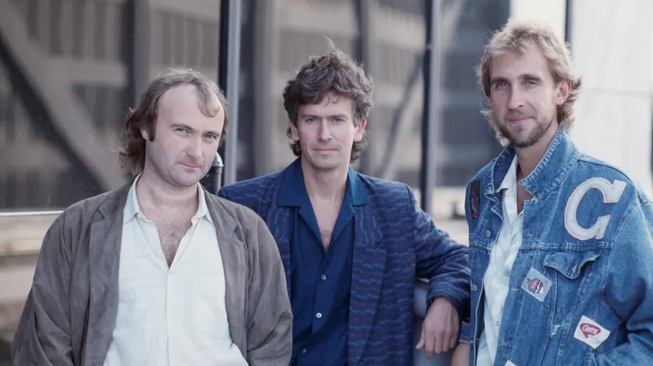

Genesis are an English rock band formed at Charterhouse School, Godalming, Surrey, in 1967. The band's longest-existing and most commercially successful line-up consisted of keyboardist Tony Banks, bassist/guitarist Mike Rutherford and drummer/singer Phil Collins. In the 1970s, during which the band also included singer Peter Gabriel and guitarist Steve Hackett, Genesis were among the pioneers of progressive rock.
The group were formed by five Charterhouse pupils, including Banks, Rutherford, Gabriel, and guitarist Anthony Phillips, and named by former Charterhouse pupil Jonathan King, who arranged for them to record several singles and their debut album From Genesis to Revelation in 1968. After splitting from King, the band began touring, signed with Charisma Records and became a progressive rock band on Trespass (1970). Following the departures of Phillips and drummer John Mayhew, Banks, Rutherford, and Gabriel recruited Collins and Hackett and recorded Nursery Cryme (1971). Their live shows began to feature Gabriel's theatrical costumes and performances. Foxtrot (1972) was their first hit in the UK and Selling England by the Pound (1973) reached number three there, featuring their first UK hit "I Know What I Like (In Your Wardrobe)". The concept album The Lamb Lies Down on Broadway (1974) was promoted with a transatlantic tour and an elaborate stage show, before Gabriel left the group.
| Land of Confusion | Tuesday | Wednesday |
|---|---|---|
| nai mama | nai mama |
NULL